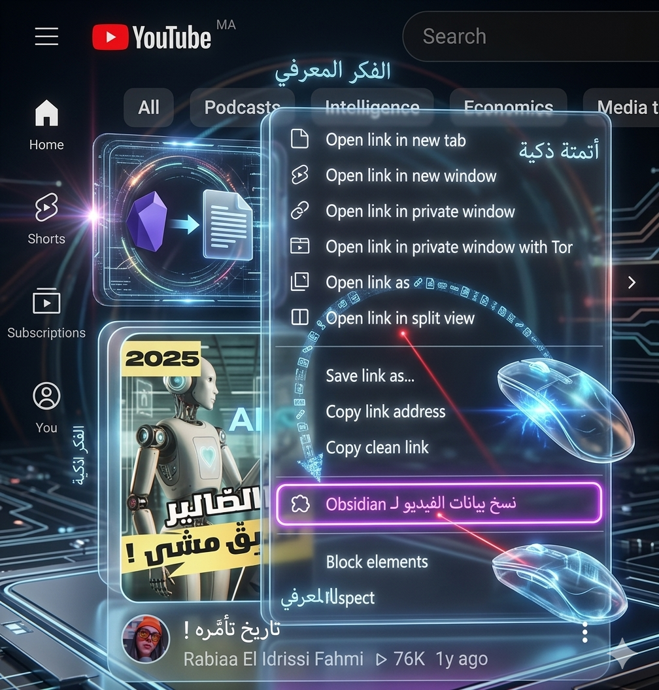

A lightweight extension that extracts video metadata via right-click without opening the video. Formats data as YAML frontmatter ready for your Second Brain.
Extract metadata directly from the homepage, search results, or sidebars via a simple right-click context menu.
Bypasses YouTube's dynamic Shadow DOM by fetching raw HTML in the background and reading static meta tags.
Data is instantly formatted into clean YAML Frontmatter, ready to be pasted into your Obsidian notes structure.
--- title: "Building a Second Brain in Obsidian" channel: "Productivity Guru" url: https://www.youtube.com/watch?v=dQw4w9WgXcQ thumbnail: "https://img.youtube.com/vi/dQw4w9WgXcQ/maxresdefault.jpg" ---
Clone the repository or download the ZIP file containing manifest.json and background.js.
In your Chromium browser (Chrome, Edge, Brave), navigate to chrome://extensions/.
Toggle the Developer mode switch in the top right corner.
Click the Load unpacked button and select the folder containing the extension files.